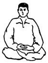
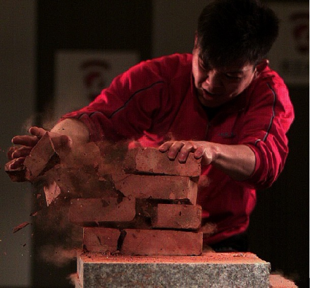

武术表演
内功
主条目：气功、内功和内劲 要是用呼吸、吐纳、运气方法，配合身体动作，以加强攻击、防守动作的效果。 由于中国民间思想受道教影响深远。道教有说法认为大宇宙（世界）和小宇宙（身体）能互相沟通影响，所以有所谓气功或内功的修练。在这种背景下，中国部分武术流派亦有“养气”、“练气”、“运气”之说。一开始，内功并不是中国武术的内容。经过漫长的发展，逐渐和气功结合。 内功的修炼效果：绝大部分普通百姓将气功修炼作为强身健体的一种方法。如果长期坚持并且练习得法，能使精神健旺，全身高度舒适，并能增强体质。如果作为技击的基本功长期练习，则可以大幅增加肌肉爆发力，并增强体力。一些主要流派，都有发出内气的功夫。
外功
主要是增强身体的筋、骨、肌肉的强度，以加强攻击、防守动作的威力。 外功修炼的效果：外功的目的一是增加自身的抗击打能力，二是增加进攻的威力。由于武术作为技击实战的意义早已基本消失，只有很少数人在练习外功。公开的表演和武警训练的内容包括用砖头猛击头部，砖头破碎而头部无损伤等。更早时期的关于外功的公开表演有例如义和团时期的刀枪不入的表演。 内外功结合 铁砂掌 内外功结合 铁砂掌 武术内外结合“铁砂掌” 武术内外结合“铁砂掌” 武术表演既究形体规范，又求精神传意。内外合一的整体观，是表演中国武术的一大特色。这种表演经常以集体进行的徒手、器械或能手与器械的为主要表演形式，变换队形，图案，加上用音乐伴奏，队形整齐、动作协调一致，极具观赏性和震撼力。在武术基础上创造了一整套的有思想、有表情、有层次、有结构、有难度的立体练习程式，从而构成艺术体操的美。武术以其高超的难度技巧，独特新颖的编排、妩媚多姿的动作，袅袅婷婷的动作及协调一致的音乐配合等因素来展示出优美而的姿态美。